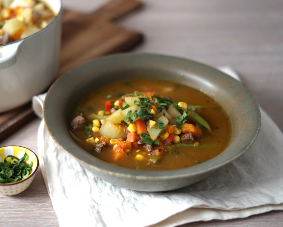

Carbonada

Description
A traditional Chilean carbonada is a delicious and hearty dish, a simple
and straightforward recipe that is ubiquitous on tables throughout the
country, a stew widely consumed during the winter.
Carbonada is one of those classic grandmother’s preparations, made with
diced meat and vegetables that are added step by step according to their
cooking point to ensure that everything is perfectly integrated when
serving.
Ingredients
- 500 g of diced beef
- 4 potatoes, diced
- 2 tablespoons of vegetable oil
- 1 ½ cups of corn kernels
- 1 carrot, diced
- 1 cup of diced yellow squash
- 1 cup of green beans, cut lengthwise
- 1 onion, finely diced
- 1 beef stock cube
- 1 garlic clove, minced
- 1 teaspoon of oregano
- ½ teaspoon of ground cumin
- ¼ red bell pepper, finely diced
- 1 liter of boiling water
- Fresh cilantro
- Salt
- Pepper
Steps
-
In a large pot, heat the oil over medium heat, add the diced beef, diced
onion, minced red bell pepper, and minced garlic. Stir with a wooden
spoon and cook for about 10 minutes until the onion is soft, and the
beef is evenly browned.
-
Dissolve the beef stock cube in the boiling water. Add oregano, ground
cumin, salt, and pepper to taste to the pot, stir and cook for 1 more
minute. Pour in the dissolved stock and continue stirring until
everything is well integrated.
-
Add the diced potatoes, squash, and carrots, and cook semi-covered over
medium heat for about 15 minutes or until the vegetables are nearly
cooked.
-
Add the corn kernels and the diced green beans, and cook for an
additional 5 minutes until everything is well-cooked and tender.
-
Serve the carbonada immediately, hot, preferably in a clay bowl, and
garnish with chopped fresh cilantro.